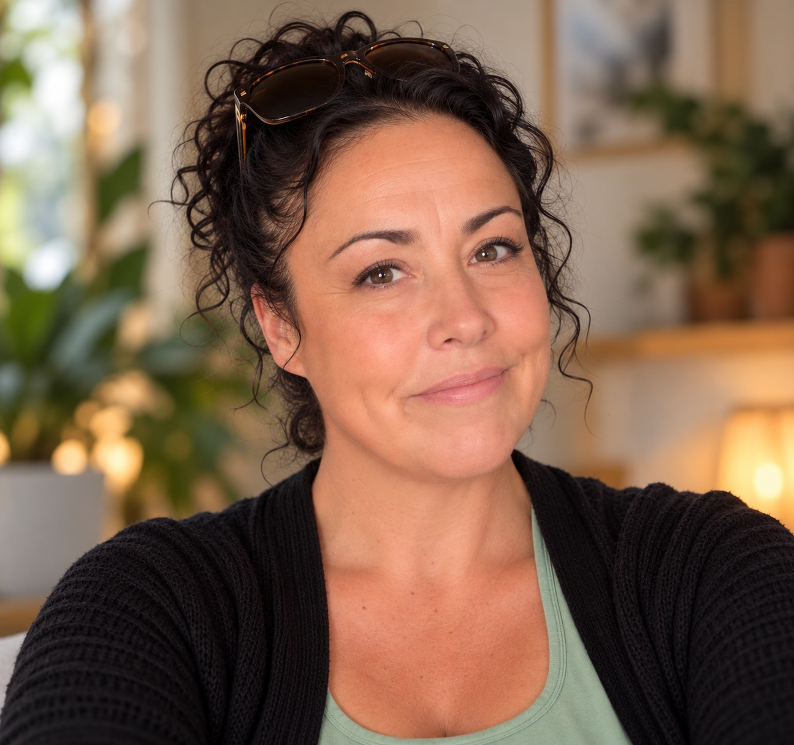

About Me
I'm Janine Conway.
I'm a person-centred counsellor and founder of Let Me Help.

For over 20 years, I've worked alongside people facing a wide range of challenges through employability, mentoring, coaching and personal development. Much of this work has involved supporting young people and adults through difficult circumstances, helping them recognise their strengths and explore possibilities for change.
Over time, I came to recognise that what someone appeared to be struggling with wasn't always the whole story. Behind the challenges people faced were often experiences, emotions and circumstances that needed more than practical advice or encouragement.
This understanding was one of the main reasons I chose to train as a counsellor. I wanted to develop the knowledge and skills to support people at a deeper level, offering them the time and space to explore what was happening in their lives.
My counselling experience
Person-centred and trauma-focused
My counselling experience spans both my private practice and my work with Manchester Mind, supporting adults with a wide range of experiences and challenges. These include anxiety, grief, relationship difficulties, low self-worth, cultural and family expectations, questions around identity and belonging, religious trauma, and the impact of difficult life experiences.
I am a qualified person-centred counsellor with additional training in trauma-focused practice. I understand that our experiences can shape how we see ourselves, relate to others and respond to the world around us, sometimes in ways we may not immediately recognise.
I bring warmth, empathy and understanding to my counselling work. I recognise that everyone's experiences are different, and I take time to understand what life feels like from your perspective. Through thoughtful questions and reflection, I support you in developing a deeper understanding of yourself, your feelings and what matters to you.
You don't need to know exactly what's troubling you or have the right words to explain how you're feeling. We can explore things together, making space for whatever feels important to you, without pressure to reach answers or make changes before you're ready.
Experience and understanding
The experience I bring to counselling
Throughout my career, I've worked with people from many different backgrounds, professions and walks of life. My experience has shown me that emotional difficulties can affect anyone, regardless of their circumstances, and that every person brings their own experiences, pressures and perspectives.
My work has given me an understanding of the challenges people may face through disability, sight loss, life-changing illness, caring responsibilities and significant changes in their lives. I've also supported people experiencing disadvantage and those affected by offending and the criminal justice system.
I believe that no one should be defined solely by their circumstances or past experiences. Everyone deserves to be treated with dignity, respect and understanding.
Thinking about counselling?
If you'd like to find out more about how I work, you can read about my approach or get in touch.
My Approach Get in touch